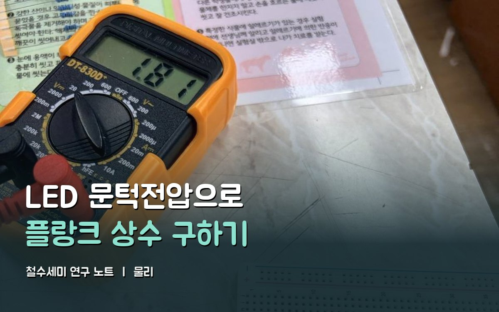
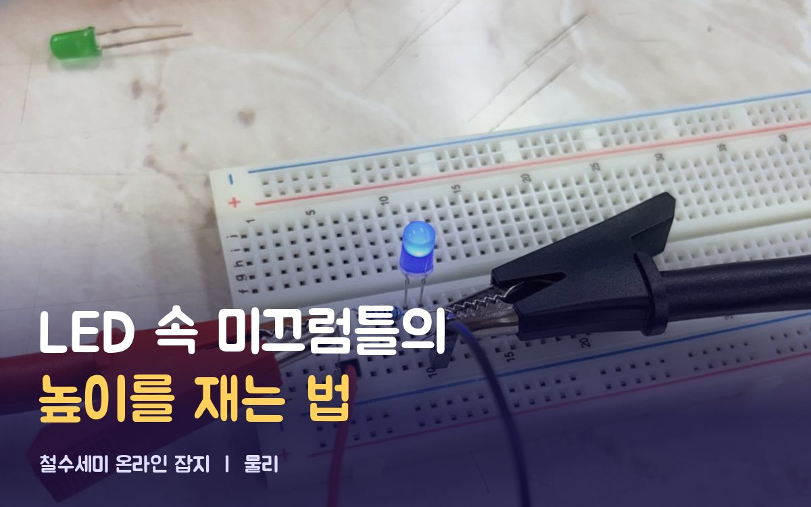

철수세미
탐구
물리 · 박혁진
LED로 잰 플랑크 상수
같은 실험을 두 가지로 썼어요. 읽을 사람에 맞게 골라 주세요.
어른용

연구 노트
LED 문턱전압으로 플랑크 상수 구하기
원데이터와 계산 과정, 오차 분석까지 다 실었어요. 비유 없이 숫자와 식으로 설명해요.
어린이용

잡지 기사
LED 속 미끄럼틀의 높이를 재는 법
미끄럼틀, 환율, 택시 요금으로 풀어 썼어요. 직접 해 보는 프로그램이 3개 있어요.